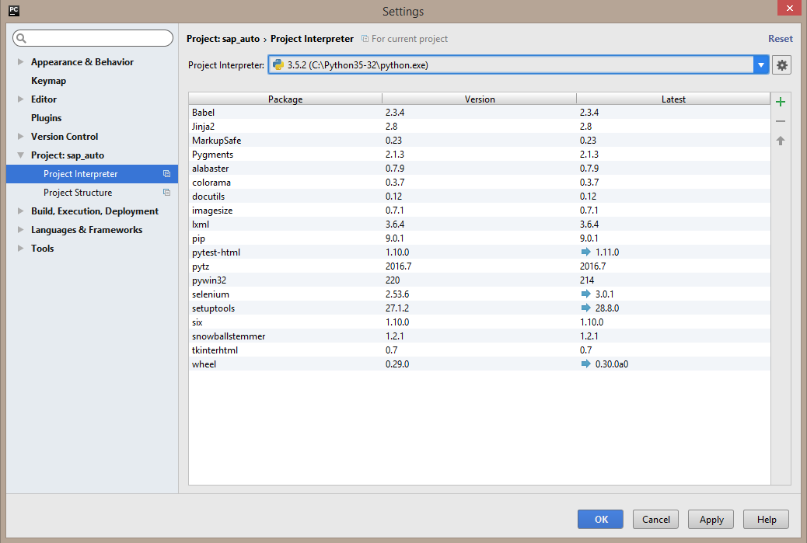
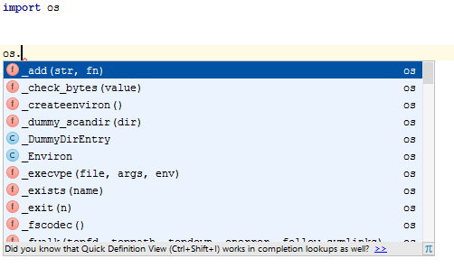

Introduction¶
Welcome to the AF/P-Q Python Training! As the training will cover “intermediate level” concepts, the participants are assumed to have already learned the basics of Python programming language. For a general introduction to the language, the basic keywords and data types (lists, dictionaries, strings, tuples etc...), see one of the following resources:
Requirements¶
Before taking part in the training, make sure to download and install the following tools (available in Software Center)
- Python 3.5.2
- PyCharm 2016.1
- Git
Verify your installation¶
After you installed Python and PyCharm:
- Check Python installation
- open the command line and type
pythonorpy -3if you have python 2.x installed alonside. - Check that Python 3.5.2 started
- Close the interpreter by pressing
Ctrl+ZandEnter
- open the command line and type
Configure PyCharm and check auto-completion.
- Install PyCharm 2016.x from Software Center
- After installation it’s not available through the search in Start Menu. Create a shortcut on the desktop manually
(to
C:\Program Files (x86)\JetBrains\PyCharm Community Edition 2016.1.4\bin\pycharm.exe) - Open PyCharm - Create new project. - Go to Setting->Project: ... -> Project interpeter and set Python 3.5.2 as project interpeterCreate a new python module in the project and type:
import os
Check that the line above is not red underlined and that auto-completion works (type
os.and see if the list of suggestions appeared)
Python 3.x vs 2.x¶
This training is based on Python 3.5.2 and the examples may not work with the previous versions of Python, especially with Python 2.x. We will not cover the differences or incompatibilities between the versions 2 and 3 in details. Following what the official wiki states:
Python 2.x is legacy, Python 3.x is the present and future of the language
... we will concentrate on the newest version only.
See https://wiki.python.org/moin/Python2orPython3 for more information.